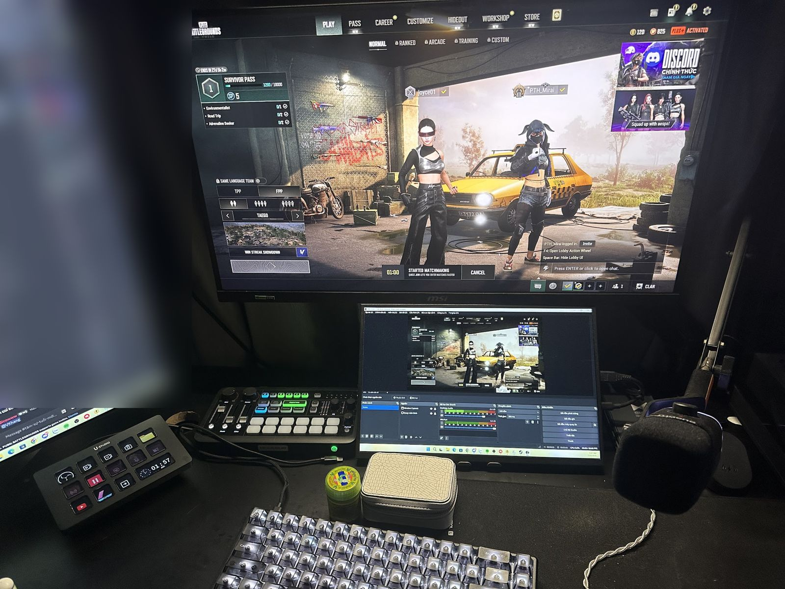
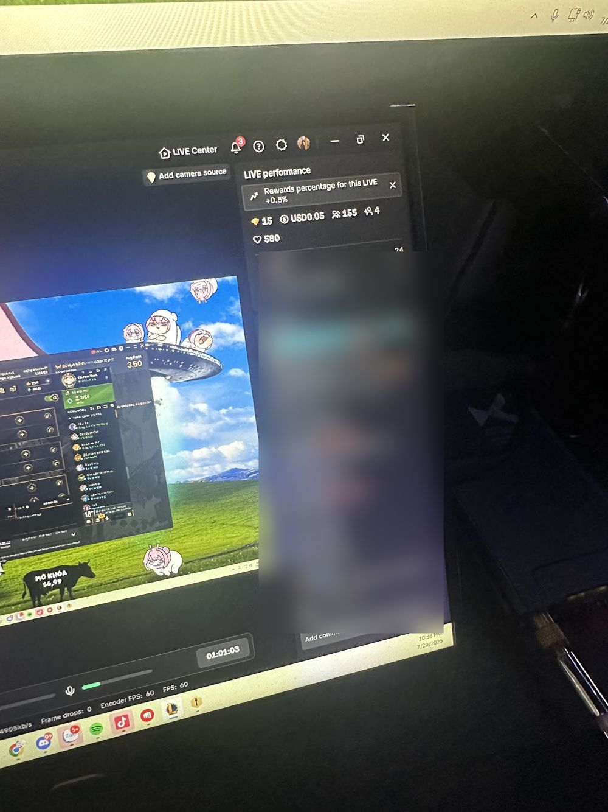
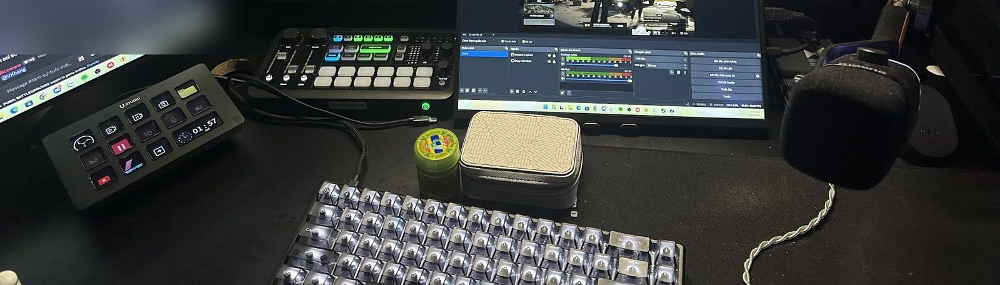
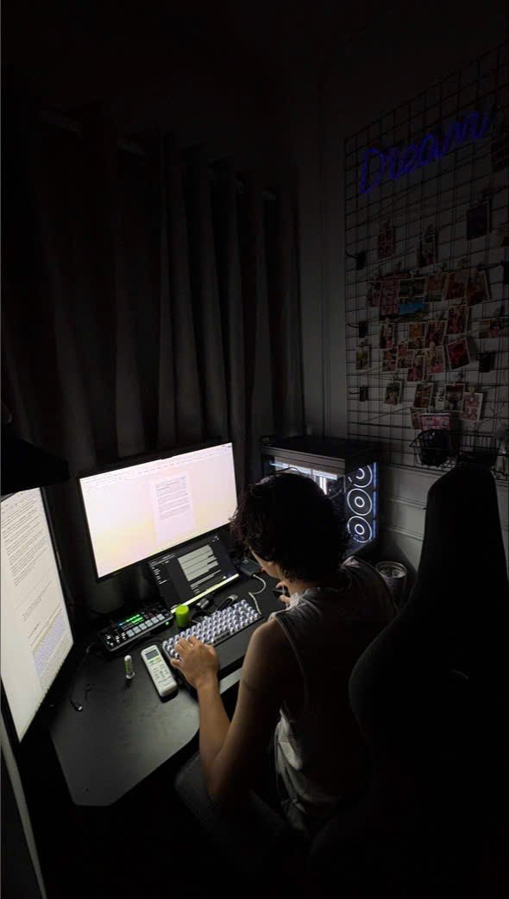

BOOK BICOW
Your event. My voice. Let's make it memorable.
Game Caster, MC và hợp tác dự án ngắn hạn cho giải đấu, sự kiện game và cộng đồng.
Ba cách để sự kiện của bạn có tiếng nói
Chọn dịch vụ phù hợp, điền form, mình sẽ liên hệ lại để chốt chi tiết.
Game Caster
Bình luận trực tiếp các trận đấu, giải đấu và showmatch: giữ nhịp trận, phân tích thế trận và đẩy cảm xúc ở những khoảnh khắc cao trào.
Xem chi tiết →02MC
Dẫn dắt chương trình sự kiện game và cộng đồng: mở màn, kết nối các phần, giao lưu với khán giả và giữ không khí xuyên suốt.
Xem chi tiết →03Project Collaboration
Tham gia các dự án ngắn hạn như video, nội dung, chiến dịch hay hoạt động cộng đồng. Phạm vi và hình thức hợp tác trao đổi trực tiếp.
Xem chi tiết →Đã quen với áp lực trên sóng
Mình đã livestream đều đặn và làm quen với việc giữ nhịp, giữ cảm xúc và tương tác trực tiếp với người xem trong suốt cả phiên.
(trung bình sau 1 tháng đầu)
trong một phiên live
Tựa game mình nhận bình luận và dẫn:

Góc làm việc chuẩn chuyên nghiệp
Hệ thống máy tính, màn hình theo dõi OBS, mixer âm thanh, stream deck và micro thu âm để mỗi buổi bình luận hay dẫn chương trình đều rõ tiếng và ổn định.


Quy trình đặt lịch
Mình nhận booking trong khung 19:00 – 22:00 hằng ngày. Gửi form xong, yêu cầu chỉ được tiếp nhận, lịch chưa được xác nhận cho đến khi hai bên chốt.
Gửi yêu cầu
Điền form booking với thông tin sự kiện của bạn.
Mình liên hệ
Phản hồi qua thông tin bạn để lại, trong khung 19:00 – 22:00.
Chốt chi tiết
Thống nhất lịch, kịch bản, hình thức và chi phí.
Lên sóng
Cùng tổ chức một sự kiện đáng nhớ.